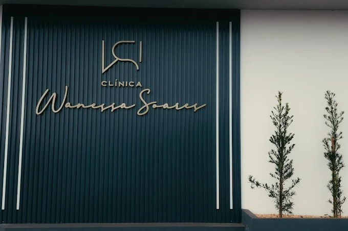
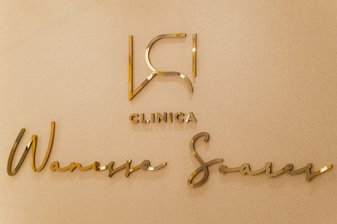

01
Estética facial
Cuidados voltados à aparência e à harmonia facial, com orientação individual e foco em resultados naturais.
Saber maisEstética, cuidado e bem-estar
Um espaço acolhedor em Jaciara para cuidar de você com atenção, avaliação individual e escolhas alinhadas às suas necessidades.
Beleza com naturalidade.
Cuidado com propósito.
Bem-estar em cada detalhe.
Sobre a clínica
Na Clínica Wanessa Soares, cada atendimento começa com uma conversa. Antes de indicar qualquer cuidado, buscamos compreender o que você deseja, sua rotina e o que faz sentido para o seu momento.
O ambiente combina acolhimento, atenção aos detalhes e uma experiência tranquila — sem promessas irreais e sem soluções padronizadas.
Realçar sua beleza é também respeitar sua individualidade.
Cuidados
Os procedimentos e acompanhamentos são definidos após avaliação, respeitando suas características, expectativas e necessidades.
Cuidados voltados à aparência e à harmonia facial, com orientação individual e foco em resultados naturais.
Saber maisProtocolos corporais definidos conforme seus objetivos e a avaliação profissional, com acompanhamento cuidadoso.
Saber maisUma opção prática para reduzir pelos de forma progressiva, com orientação sobre preparo, sessões e cuidados.
Saber maisAcompanhamento para construir hábitos possíveis e uma relação mais equilibrada com alimentação, rotina e objetivos.
Saber maisA disponibilidade de cada procedimento pode variar. Confirme pelo WhatsApp qual cuidado é mais adequado para o seu caso.
Nosso jeito de cuidar
Você recebe orientação para entender as possibilidades, os cuidados necessários e o que pode ser esperado de cada etapa.
Quero conversarSeus objetivos e sua rotina são considerados antes de definir qualquer caminho.
O cuidado busca valorizar seus traços e preservar o que faz você ser você.
Você entende cada etapa, inclusive recomendações de preparo e cuidados posteriores.
A clínica
Esta seção está em modo de prévia. A estrutura abaixo funciona com poucas ou muitas imagens — inclusive 10 fotos ou mais — sem deixar a página excessivamente longa.
As imagens atuais servem como referência de layout. Antes da publicação definitiva, mantenha as fotos reais já aprovadas e substitua qualquer imagem temporária pelas fotos finais da clínica.


Para adicionar mais fotos depois, basta repetir um item da galeria no HTML. O carrossel mantém o mesmo tamanho e cria a navegação automaticamente.
Equipe
Assim como na galeria da clínica, esta seção foi pensada como um template. Você pode substituir os espaços abaixo pelas fotos reais da equipe quando quiser, mantendo o layout bonito e organizado.
Para adicionar mais profissionais depois, basta duplicar um cartão da grade e trocar foto, nome e função. O layout se adapta automaticamente.
Especialidade / função
Especialidade / função
Especialidade / função
Especialidade / função
Como funciona
Conte brevemente o que você procura e tire suas primeiras dúvidas.
Escolha o melhor horário disponível para um atendimento individual.
Conheça as possibilidades e decida com clareza o que faz sentido para você.
Realize as etapas indicadas e mantenha o acompanhamento recomendado.
Avaliações no Google
“Fui bem atendida desde a recepção! Senti confiança em realizar o procedimento com a Dra. Wanessa! O resultado ficou melhor do que eu esperava! Além disso, a clínica oferece grande variedade de procedimentos! Gostei e indico.”
“Atendimento muito bom, ótimas especialistas. Recepção incrível, ganhei até um cafezinho chique, perfeito!”
“Melhor clínica de Mato Grosso, o espaço é maravilhoso, a Wanessa é perfeita!”
Dúvidas frequentes
Não encontrou sua dúvida? Envie uma mensagem e receba uma orientação inicial.
Perguntar pelo WhatsAppA avaliação ajuda a compreender seus objetivos, características e possíveis cuidados necessários. A equipe confirma pelo WhatsApp como funciona para o atendimento desejado.
O agendamento pode ser iniciado pelo WhatsApp. Informe qual serviço procura e a equipe apresenta os horários disponíveis.
Isso varia conforme o procedimento, a resposta individual e o objetivo definido. Uma estimativa responsável só pode ser dada após avaliação.
As orientações dependem do atendimento realizado. A equipe informa o preparo necessário e os cuidados posteriores de forma individual.
Localização e contato
Use o mapa para localizar a clínica ou solicite a rota completa pelo WhatsApp.
Uma visualização rápida para orientar o agendamento. Em feriados ou datas especiais, confirme o funcionamento pelo WhatsApp.
Seu cuidado começa aqui
Envie uma mensagem para a equipe e receba as informações necessárias para dar o próximo passo com tranquilidade.